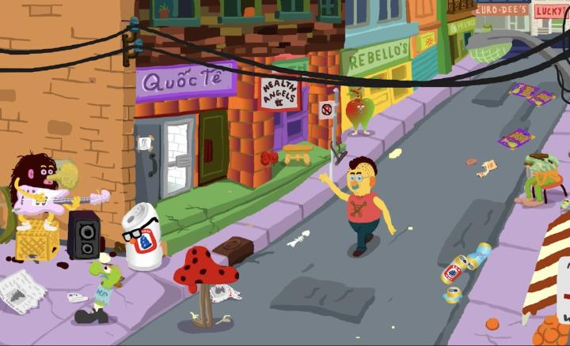

I don't often go to Toronto, and don't often see movies in the TIFF Lightbox theatre, home of the famous TIFF film festival. I don't often expect them to show animated films either, but they do come up on occasion. Knowing nothing about a new film called "Endless Cookie," I took the opportunity to see it blind while enjoying the cultural landmark. "Endless Cookie" does suffer from a lot of the issues that most "animated-by-one-guy" movies do, but is still a little special in that it depicts an honest and likable, modern, real indigenous family. Framed as a comedy without any clear direction, the movie breaks the fourth wall with its characters as if it was a documentary. It opens with director Seth meeting with a Canadian government official to confirm he was granted funding for his film proposal. He immediately calls his half-brother, Pete, who lives further north: with funding in hand, they just have to make a story that's "funny, beautiful, spiritual, political, complex, simple and true." "Sounds good," says Pete. Seth will travel back and forth to Shamattawa to interview Pete, a respected storyteller in the family, from Toronto where he'll animate the interviews. It'll take a while, given that Pete's large family and small home will constantly interrupt the recodings. The film itself acknowledges that the movie takes nearly a decade to complete, well over schedule and budget. The art style is, at best, "eccentric." All the characters are rendered with all colours of the rainbow, some as animals, some as food (including a daughter named "Cookie," per the title), and some as arbitrary shapes with eyes and hair. Short with large heads, often just sitting and talking and laughing, the simplicity reminded me a lot of low-budget Eastern-European / Soviet-era animation, or more commonly, local folk art. There's certainly character in it, but from a technical or artistic level, it never looks great both in frame or in motion. Music is added to just fill the empty space, and dialogue sounds like it was recorded from a single microphone placed in the centre of a house (based on the context of the movie, it probably was), recorded by real people and not actors.There is something to the movie. Not for plot (there isn't one), but of a portrait of a modern native family, of which the end credits pay tribute to. Pete's musings are like listening to a beloved Uncle, telling basic stories with sprinkles of Dad jokes, but you still hang on every word. When the recoridng is interrupted by a toliet flushing, or a television, or one of the children wanting to show Seth something, you find it charming and don't blame Seth for his kind patience. The movie is funny, not in a slapstick or roll-over sort of way, but in a casual conversation-with-your-friends sort of way. But more than that, conversations with the family will weave in larger things, like the suicide of a young family member, or the government suddenly declaring surrounding land to no longer belong to the reservation, or the differences in growing up in the reservation versus downtown Toronto. These add an honest poignancy. And this is never framed as a call to action to start a political movement amongst college students. It's just spoken about as if it's the way things are and have been. It's clearly wrong, and eye-opening in ways most viewers won't have fully known, but the movie lets you come to those conclusions yourself without lecturing you about it. The way the family handles it makes them feel all the more real. While I could appreciate that... when I looked at my watch expecting the movie to almost be done, I was shocked that only 30 minutes had passed. With slow monotonous pacing, "Endless Cookie" is a slog to sit through. Sure, it's hard to edit or cut out conversations with real people (especially personal family or friends), but this could have easily been cut down into a series of shorts, perhaps for government-funded television or the internet. Perhaps then, it wouldn't have taken so long to make. In fact, there's no reason the finished feature film can't be cut into separate chuncks now, and packaged in a way people are more likely to sit through. But then, if it wasn't a feature film with a limited theatre release... would I have ever heard of it? Would I ever have seen it? Even if it lacks technical merit, I'm happy I saw "Endless Cookie" for a perspective I'd otherwise not seen.
- "Ani" More reviews can be found at : https://2danicritic.github.io/ Previous review: review_Empress_of_Darkness_-_The_Curse_of_Graxus Next review: review_Erased